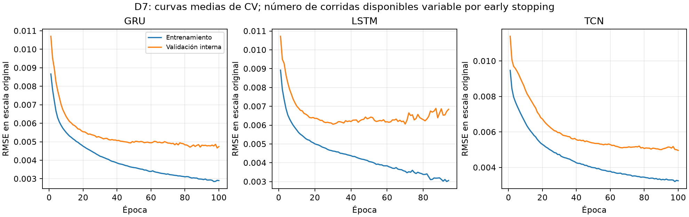
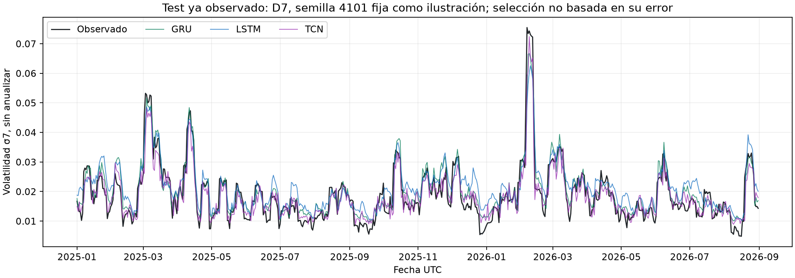
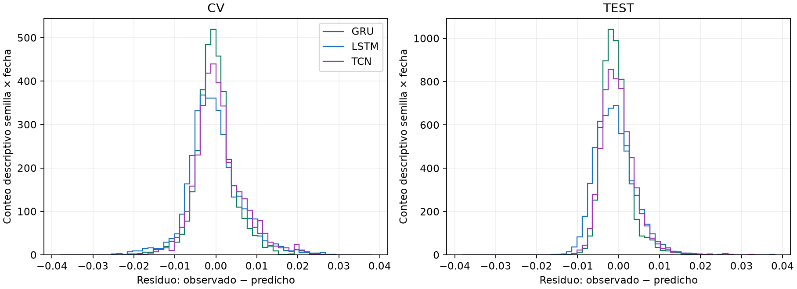

4. Implementación y evaluación: diseño y estado de ejecución#
Dos fases del estudio. Las tablas de cuatro entradas, diez semillas y test enero de 2025–agosto de 2026 de este capítulo corresponden a la fase I exploratoria. La fase II D7 añade búsqueda equitativa, piloto anterior a su ejecución definitiva, dimensionamiento y evaluación preespecificada sobre el 01/09–30/10/2026. Sus recetas, recuentos y resultados se identifican por separado en el capítulo 9.
La comparación principal utiliza GRU, LSTM y TCN residual causal, con entradas de 7, 14, 21 y 28 días, cinco covariables OHLCV diarias, objetivo de volatilidad poblacional de siete retornos y horizonte de un día. El resumen vigente, las especificaciones y la selección con CV identifican esta versión.
La CV de Filipe sobre 2024 completó 120 trayectorias, 1.440 segmentos mensuales, 2.880 ajustes y 43.920 predicciones. Las cuarenta trayectorias LSTM se reentrenaron como control y reprodujeron exactamente sus 14.640 predicciones previas. El baseline neuronal elegido por la RMSE media de CV es GRU/D7; la decisión se cerró antes de esta fase final.
Para evaluar 2025–agosto de 2026 se congelaron 120 conjuntos de pesos y escaladores: 80 ajustes nuevos de GRU/TCN y 40 modelos LSTM idénticos reutilizados. Hay 72.960 predicciones sobre 608 fechas comunes: 48.640 nuevas y 24.320 LSTM reutilizadas. El test ya había sido observado en el proyecto; esta comparación es exploratoria, aunque los modelos nuevos se cerraran antes de volver a puntuarlo.
Las tres recetas de fase I son adaptaciones compactas, con alcance bibliográfico y límites de recurrencia explicitados en el capítulo 3. Diez semillas constituyen un presupuesto fijo de comparación: no son el resultado de un piloto de potencia de este trío. Sus contrastes internos y el margen para E2 se distinguen de las decisiones anteriores al entrenamiento.
4.1. Diseño Experimental#
El diseño mantiene fechas, información disponible, objetivo y reglas de ajuste comunes. Se distinguen la elección con desarrollo, el cierre anterior a la puntuación de los nuevos modelos y la exposición histórica del test.
4.1.1. Definición clara de:#
La observación supervisada corresponde al resultado de un día UTC. Historia de entrada, longitud del objetivo y horizonte son parámetros distintos y permanecen identificados.
4.1.1.1. Variables de entrada: representación y dimensiones#
Las entradas del día d son OHLCV de los días d−D,…,d−1, con \(D\in\{7,14,21,28\}\). Se agregan velas oficiales de un minuto a días UTC. El tensor común tiene forma \(N\times D\times5\); GRU y LSTM consumen esa disposición y la TCN la transpone internamente a lote–canal–tiempo.
No se añaden rezagos explícitos del objetivo. Se conserva el calendario completo: el día incompleto 24/03/2023 y todas las ventanas dependientes se excluyen, sin imputar ni unir artificialmente fechas distantes.
4.1.1.2. Variable objetivo y horizonte de predicción#
El objetivo \(y_d=\sigma_7(d)\) es la desviación estándar poblacional de siete retornos logarítmicos diarios de cierre, con ddof=0 y sin anualizar. El retorno del día d aún es desconocido al emitir el pronóstico; por ello el horizonte es h=1 día. Cambiar D no cambia los siete retornos del objetivo.
La salida Softplus es positiva. La pérdida es MSE sobre el objetivo dividido por la media positiva del entrenamiento, sin centrar; después se invierte esa escala para puntuar. RMSE es primaria; MAE, MSE, R², MAPE y MASE son secundarias.
4.1.2. División del dataset#
La partición temporal sigue el calendario y la disponibilidad de la etiqueta; no es una división aleatoria de ventanas.
4.1.2.1. Entrenamiento, validación y prueba#
Etapa |
Calendario |
Función |
|---|---|---|
Historia inicial |
2023 |
Primer entrenamiento elegible de cada D |
CV creciente |
Doce meses de 2024 |
Selección de duración interna y comparación de las cuatro historias |
Cierre final |
Desarrollo 2023–2024 |
Selección GRU/D7 y firma de los pesos antes de puntuar esta fase |
Evaluación histórica |
01/01/2025–31/08/2026 |
608 fechas comunes; periodo ya observado, alcance exploratorio |
Los 365/366/608 días equivalen al 27,26 %/27,33 %/45,41 % del calendario descrito. No son proporciones exigidas por Filipe ni tamaños efectivos de cada fold. Septiembre–octubre de 2026 quedó fuera de fase I. La fase II asigna explícitamente el 01/09–30/10/2026 a otra evaluación, con su propio registro previo; no amplía ni vuelve desconocido el test anterior.
4.1.2.2. Esquema de validación y selección de hiperparámetros#
Se utilizan los índices reales de timeseries-cv 0.1.5, mediante split_train_val_forwardChaining con np.arange(731), numInputs=D, numOutputs=1 y numJumps=1. Los orígenes diarios de validación de 2024 se agrupan en doce meses; el primer origen fija el entrenamiento permitido del mes.
La ruta 6.4 de la guía exige embargo igual al máximo rezago D. Para el comienzo mensual t se admiten resultados \(u\le t-D-1\). Con inicio interno \(v=t-90\), el subentrenamiento admite \(u\le v-D-1\) y la validación interna ocupa \(v,\ldots,t-D-1\). Se aplican además los filtros de calidad.
D |
Train enero |
Subtrain enero |
Validación interna |
Train diciembre |
|---|---|---|---|---|
7 |
343 |
253 |
83 |
678 |
14 |
322 |
232 |
76 |
657 |
21 |
301 |
211 |
69 |
636 |
28 |
280 |
190 |
62 |
615 |
Se elige la menor RMSE anual media de CV; los desempates previstos favorecen menor D y después menos parámetros. Las tres familias seleccionan D7 y GRU/D7 es el baseline neuronal. La CV ya era conocida al diseñar las nuevas recetas: no es una búsqueda anidada independiente.
4.1.3. Definición de pipeline#
Cada etapa ajusta sus transformaciones con su entrenamiento permitido y conserva la identidad de fechas, configuración y artefactos.
4.1.3.1. Preprocesamiento y construcción de datos#
La representación relative_window toma logaritmos de OHLC relativos al último cierre observado de la ventana y log1p del volumen. Las medias y desviaciones por canal se estiman sobre las posiciones de las ventanas de entrenamiento. Una desviación nula se sustituye por uno y se registra.
Cada selección interna y reajuste mensual tiene sus propios escaladores; los del ajuste final quedan fijos durante todo el test. Y se divide por su media de entrenamiento, sin centrar. No se ajustan transformaciones con la validación externa ni con etiquetas de test.
4.1.3.2. Entrenamiento y parada temprana#
Cada segmento de CV realiza dos ajustes: selección de duración con validación interna pasada y un reajuste desde otra inicialización sobre todo el entrenamiento permitido. Una trayectoria de doce meses implica 24 ajustes, sin warm start.
La época del ajuste final procede de la mejor época interna de diciembre para su familia, D y semilla. Se realizaron ochenta ajustes finales nuevos; los cuarenta LSTM conservan pesos y escaladores históricos idénticos. Todos estaban cerrados antes de puntuar esta fase del test ya conocido.
4.1.3.3. Evaluación y agregación de métricas#
Por trayectoria se agrupan las 366 fechas de CV o las 608 de test, y se calcula
Después se resumen las métricas entre las diez semillas. R² utiliza la media del objetivo del mismo periodo; no se promedian R² mensuales. La media de RMSE por semilla no es la RMSE de un ensemble. Los meses son desgloses temporales del error, no réplicas independientes.
4.1.4. Piloto#
La fase I no tuvo un piloto anterior a su benchmark. Sus diez semillas por familia e historia fueron un presupuesto exploratorio. La fase II D7 corrige el orden para una ejecución nueva: primero congela las recetas seleccionadas, después ejecuta un piloto con diez semillas nuevas por familia sobre 60 días de desarrollo y dimensiona los ajustes definitivos. Véanse §9.4 y §9.5. No se atribuye el nuevo piloto al benchmark anterior o a D14/21/28.
Los estudios de otros procedimientos no se atribuyen a este trío. La tabla CV vigente permite verificar medias y DE de las diez ejecuciones; los 120 conjuntos D–modelo–semilla no equivalen a 120 mercados.
4.1.5. Diferencia mínima de interés#
Para orientar un futuro modelo avanzado se define en esta revisión un margen operativo del 5 % del RMSE CV de GRU/D7:
Este margen se fija después de observar el test, como criterio académico futuro; no fue una decisión previa de este benchmark ni demuestra rentabilidad. El siguiente estudio deberá justificarlo, congelarlo y comparar el avanzado tanto con GRU/D7 como con persistencia antes de acceder a una evaluación independiente.
4.1.6. Tamaño de muestra#
En fase I se ejecutó R=10 semillas 4101–4110 por combinación, sin dimensionamiento previo. El R de fase II D7 se calcula con t no central, α*=0,05/3, potencia marginal objetivo 0,80 y una cota superior simultánea de las DE pareadas del piloto. El capítulo 9 identifica el valor, sus semillas disjuntas y el alcance condicional de esa planificación.
Unidad |
CV2024 |
Evaluación histórica |
|---|---|---|
Recetas modelo–D |
12 |
12 |
Trayectorias por semilla |
120 |
120 |
Ajustes nuevos |
2.880 |
80 |
Modelos finales reutilizados |
No aplica: LSTM se reentrena |
40 LSTM |
Predicciones |
43.920 nuevas |
48.640 nuevas + 24.320 reutilizadas |
Las diez semillas sólo modifican la aleatoriedad del entrenamiento, condicionada a una misma trayectoria de mercado. El análisis D7 de fase I es exploratorio; no se denomina confirmatorio ni hereda el tamaño de estudios anteriores.
4.1.7. Diferencia mínima detectable#
La fase I no acredita una MDE prospectiva. En fase II D7, el piloto y el cálculo de R preceden a sus ajustes definitivos; el dimensionamiento y las MDE conservan α, δ, dispersión, incertidumbre y multiplicidad. Esa planificación corresponde a la comparación actual de tres recetas, no al futuro modelo avanzado. El margen \(\delta\) y la dispersión entre semillas son cantidades distintas.
Una planificación futura deberá resolver la potencia del contraste pareado previsto, por ejemplo usando \(\delta\sqrt R/s_\Delta\) como parámetro de no centralidad bajo diferencias normales independientes. La DE estimada con diez semillas tiene incertidumbre y no asegura esos supuestos. No se usa el efecto observado para calcular «potencia alcanzada», ni se afirma que una MDE insuficiente quede resuelta por obtener p<0,05.
4.1.8. Relación con el Entregable 2#
El siguiente entregable puede estudiar un modelo avanzado y exigir una mejora práctica frente a GRU/D7 y persistencia. Esa comparación necesita su propio piloto, criterio de selección, control de multiplicidad y datos no usados para desarrollarla. La sustitución del trío principal no convierte el test histórico en una evaluación desconocida.
4.1.9. Registro#
Los cierres locales conservan códigos, fuentes y hashes anteriores a los ajustes. La publicación del libro ocurre después de la ejecución y no se describe como un preregistro público anterior.
4.1.9.1. Preregistro fechado y trazabilidad#
El protocolo de las nuevas recetas se congeló el 05/11/2026 a las 16:12:03 UTC antes de sus ajustes CV. La elección de historias y GRU/D7 consta en el cierre final de las 16:41:41,990907 UTC, anterior a los ajustes nuevos finales y a esta puntuación del test.
Estos registros no borran la exposición previa a 2024 y al test histórico. Los tres contrastes internos D7 y el margen operativo actual se presentan como definiciones posteriores, sin atribuirles la antelación del protocolo que comparaba otros procedimientos. El resumen y la selección mantienen esos alcances.
4.1.9.2. Estado del diseño y del piloto#
Componente |
Estado actual |
|---|---|
GRU, LSTM y TCN en cuatro historias |
Ejecutados, diez semillas por combinación |
Control LSTM CV |
14.640 predicciones exactamente reproducidas |
Ajustes finales |
80 nuevos y 40 LSTM reutilizados |
Evaluación histórica |
608 fechas; exploratoria |
Piloto de fase I / fase II D7 |
No existió antes del benchmark inicial; fase II realiza piloto y dimensionamiento antes de sus propios ajustes definitivos (§9.4–9.5) |
Confirmación temporal nueva |
Pendiente |
Margen para E2 |
Definido ahora, después de test |
Las recetas no se cambian tras la puntuación. La documentación vigente usa exclusivamente este trío y persistencia como referencia contextual.
4.2. Implementación de los Tres Modelos Base#
Las redes implementadas comparten información disponible y salida positiva. Se diferencian en sus operadores temporales, no en el dataset de entrada.
4.2.1. Implementación de los tres modelos base#
Modelo |
Arquitectura ejecutada |
Parámetros |
|---|---|---|
GRU |
Una capa unidireccional H=32; último estado → dropout 0,1 → Linear(32,1) → Softplus |
3.777 |
LSTM |
Una capa unidireccional H=32; último estado → dropout 0,1 → Linear(32,1) → Softplus |
5.025 |
TCN |
Tres bloques residuales de dos Conv1D causales k=3, ancho 16, dilataciones 1/2/4; último instante → dropout → Linear(16,1) → Softplus |
4.289 |
Las especificaciones distinguen estos modelos de una reproducción de recetas publicadas. La TCN suma residuales y una proyección 1×1 en el primer bloque; no utiliza atención, normalización temporal ni información futura.
Akbiyik et al. (2023) [Akbiyik et al., 2023] aporta comparadores GRU, LSTM y TCN para volatilidad de Bitcoin; Miura et al. (2019) [Miura et al., 2019] aporta apoyo independiente para GRU y LSTM, según el capítulo 3. En el corpus de siete estudios las frecuencias estrictas son GRU 3/7, LSTM 5/7 y TCN 1/7. El respaldo de TCN es limitado. GRU y LSTM son dos alternativas recurrentes de complejidad distinta; no se afirma que su falta de redundancia haya quedado demostrada.
4.2.2. Entrenamiento con el mismo pipeline, partición y semillas#
Cada modelo usa el mismo contrato causal y las mismas semillas nominales para un D dado. El control LSTM permite comprobar la continuidad del pipeline.
4.2.2.1. Pipeline, partición e información comunes#
Componente |
Regla común |
|---|---|
Entradas |
D días, cinco canales OHLCV, sin rezagos de sigma7 |
Etiqueta |
sigma7 poblacional, h=1 diario |
CV |
Doce meses de 2024, entrenamiento creciente, embargo D |
Transformaciones |
Ajustadas sólo con entrenamiento permitido |
Duración |
Elegida con validación interna pasada |
Test |
Pesos y escaladores fijos; mismas 608 fechas |
Evaluación |
Misma escala y fórmulas por trayectoria |
D cambia tanto el contexto como la purga y el entrenamiento elegible. Las diferencias entre historias no aíslan un efecto causal de tener más días de entrada.
4.2.2.2. Semillas, reinicios y reproducibilidad#
Las semillas de trayectoria son 4101–4110. Para el mes de ordinal \(j=0,\ldots,11\) (enero=0), la selección interna usa \(s_{\mathrm{mes}}=s+100\,000j\) y el reajuste usa \(s_{\mathrm{mes}}+10\,000\,000\). El orden de minibatches utiliza un generador determinista con la semilla de esa etapa más 17. Por ejemplo, para la trayectoria 4101, las selecciones de enero y febrero usan 4101 y 104101. Se reinician pesos en cada ajuste; las semillas no se seleccionan por error. La coincidencia nominal facilita el pareamiento, pero no hace idénticos los flujos aleatorios de arquitecturas distintas.
4.2.3. Definición de hiperparámetros#
Parámetro |
GRU |
LSTM |
TCN |
|---|---|---|---|
Ancho |
32 |
32 |
16 |
Learning rate |
0,003 |
0,003 |
0,001 |
Dropout |
0,1 |
0,1 |
0,1 |
Batch size |
32 |
32 |
32 |
Máximo de épocas |
100 |
100 |
100 |
Paciencia |
12 |
12 |
12 |
Optimizador |
AdamW |
AdamW |
AdamW |
Weight decay |
0,0001 |
0,0001 |
0,0001 |
Clip de norma |
1 |
1 |
1 |
No hubo búsqueda de hiperparámetros en este experimento. Las configuraciones recurrentes comparten ancho y learning rate; la convolucional conserva ancho y tasa compactos. Se comparan estas recetas fijas, no el mejor desempeño alcanzable de cada familia.
4.2.3.1. Learning rate y planificador#
Se usa AdamW con tasa constante: 0,003 en GRU/LSTM y 0,001 en TCN. No hay scheduler. La elección permanece fija entre meses, semillas y D; no se ajusta usando test.
4.2.3.2. Número de capas y unidades#
GRU y LSTM tienen una sola capa unidireccional de 32 unidades. La TCN tiene tres bloques, seis convoluciones temporales en total y ancho 16. Sus dilataciones por bloque son 1, 2 y 4. El campo receptivo teórico es 1+2(3−1)(1+2+4)=29 posiciones; sólo recibe D posiciones observadas y el resto es padding izquierdo, no historia adicional.
4.2.3.3. Batch size#
El batch size es 32 ventanas. Se baraja su orden dentro del entrenamiento permitido; los índices que construyen cada ventana y los cortes temporales no se barajan. Los últimos minibatches incompletos siguen la misma regla del ejecutor.
4.2.3.4. Optimizador, regularización y función de pérdida#
Se minimiza MSE del objetivo escalado con AdamW, weight decay 0,0001, dropout 0,1 y clipping de norma 1. En la TCN se aplica ReLU y dropout después de cada convolución, suma residual y ReLU; la cabeza final comparte dropout y Softplus. No se emplean conexiones bidireccionales ni una normalización que consulte tiempos futuros.
4.2.4. Estrategia de entrenamiento#
La política de duración es común: seleccionar épocas con pasado interno y reajustar después sobre todo el entrenamiento permitido.
4.2.4.1. Número máximo de épocas#
Se permiten hasta cien épocas en la selección interna. El número efectivo varía por familia, semilla y mes. El reajuste ejecuta exactamente la mejor época interna seleccionada, sin volver a mirar la validación externa. Una corrida que alcanza cien épocas no demuestra que ese máximo sea óptimo.
4.2.4.2. Early stopping y validación interna#
El mínimo de MSE interno determina la mejor época. La paciencia es doce y min_delta=0,00001. La selección interna termina antes de la validación mensual, con embargo D. Para la evaluación histórica se utiliza la duración de diciembre y después se congelan los nuevos modelos; no se escogen épocas con test.
4.2.5. Registro#
El catálogo CV identifica 1.440 segmentos y sus dos ajustes; el catálogo final identifica 120 modelos, distinguiendo ochenta ajustes nuevos y cuarenta LSTM reutilizados. Cada configuración conserva D, semilla, duración, parámetros y procedencia.
Las métricas se descargan en CV y test. Los pesos, escaladores y vectores individuales se mantienen en la evidencia privada; no se sustituyen por conteos de filas.
4.2.5.1. Curvas de entrenamiento y validación#
Cada selección interna conserva curvas train/validación; el reajuste conserva train durante la duración cerrada. La tabla de curvas resume D7 por etapa y época, e informa cuántos segmentos contribuyen. Ese número cambia por parada temprana: el promedio tardío no contiene necesariamente las mismas corridas que el inicial.

La figura agrega las curvas disponibles de las corridas, no representa una única semilla o mes. Una curva de reajuste sin validación no selecciona una duración nueva ni demuestra ausencia global de sobreajuste.
Estas curvas corresponden a las recetas iniciales de fase I. Las recetas del modelo final D7 tienen sus propias curvas públicas reproducidas en §9.10, con las 465 semillas por familia y sólo desarrollo 2023–2024. La nueva ejecución conserva los módulos y recetas congelados; distingue reproducción posterior, coincidencias de hashes y recuperación de originales privados. No modifica las métricas históricas ni evalúa de nuevo la reserva.
4.2.5.2. Número de parámetros#
Para H=32 y cinco entradas, GRU tiene \(3H(5+H+2)+(H+1)=3.777\) parámetros; LSTM tiene \(4H(5+H+2)+(H+1)=5.025\). Los dos términos de sesgo por compuerta corresponden a PyTorch.
En TCN, las seis convoluciones, la proyección residual 5→16 y la cabeza suman 4.289 parámetros. Los tres conteos permanecen iguales al variar D, porque sus pesos se comparten a lo largo del tiempo. Cambiar D sí modifica contexto, activaciones, costo y muestras elegibles.
4.2.5.3. Tiempo computacional y hardware empleado#
La ejecución usó CPU, tres trabajadores, un hilo intraoperación y uno interop por trabajador, con algoritmos deterministas de PyTorch. Se conservan tiempos de pared por trayectoria y etapa; concurrencia, máquina y duración seleccionada influyen. La reutilización LSTM final tiene costo incremental de entrenamiento cero, sin borrar el costo de su ajuste original.
4.2.6. Equidad en la optimización#
La fase I igualó datos, semillas, duración máxima, parada y reglas causales, pero mantuvo anchos y tasas fijos sin HPO nuevo comparable. En fase II D7 se ejecuta una rejilla de ocho candidatos por familia, dos semillas y diez bloques mensuales comunes: 320 ajustes por familia, 960 en total. Se publican todos los candidatos y se congelan las recetas antes del piloto y la nueva reserva. La equidad se refiere al método, amplitud y presupuesto registrado; no demuestra un óptimo global de las familias. La rejilla y sus resultados están en §9.3.
4.2.7. Implementación desde cero o uso de librerías justificadas#
Los operadores se implementan con PyTorch; las reglas de cohortes y entrenamiento se separan de las clases de arquitectura.
4.2.7.1. Implementación y entorno de software#
Los scripts públicos de esta versión son scripts/dl_models_gru_lstm_tcn.py y scripts/run_gru_lstm_tcn.py. Se conserva un entorno de entrenamiento fijado y un entorno compatible separado para generar los índices de timeseries-cv. La versión publicada debe reconstruir la receta sin escribir sobre los artefactos firmados originales; BUILD.md describe las dependencias y la evidencia necesaria.
4.2.7.2. Estado de implementación#
Las doce combinaciones GRU/LSTM/TCN por D están ejecutadas. No se añade atención, bidireccionalidad ni otro modelo avanzado. El control LSTM CV es exactamente coincidente; los cuarenta modelos finales LSTM y sus 24.320 predicciones son reutilización verificada, no nuevos ajustes o forwards.
4.3. Requisitos Experimentales#
Los requisitos de repetición y trazabilidad se aplican al procedimiento actual. Cumplir el mínimo de semillas no implica potencia o independencia temporal.
4.3.1. Control de semillas aleatorias#
Se fijan semillas de Python, NumPy, PyTorch, inicialización y orden de minibatches; se registra el modo determinista. La reproducción exacta del control LSTM verifica esta ejecución concreta, sin garantizar identidad bit a bit en cualquier hardware o versión.
4.3.2. Repetición de experimentos#
Hay diez ejecuciones por familia e historia, más que el mínimo general de cinco de la guía. Cada trayectoria reúne doce reajustes mensuales de CV. Las 366 fechas y los doce meses no multiplican R; en test se mantienen diez resultados por receta y 608 fechas compartidas.
4.3.3. Reporte de media, desviación estándar e intervalos de confianza#
Se informa media, DE muestral e IC95 % marginal entre semillas. Para R=10:
El intervalo representa aleatoriedad del entrenamiento condicionada a estas fechas y receta. No es un IC de rendimiento en un mercado futuro. Persistencia tiene una sola trayectoria determinista y no recibe una DE entre diez copias.
4.3.4. Uso de GPU#
Se ejecutó en CPU. No se afirma uso de GPU, aceleración o consumo energético medido. Las recetas pequeñas permiten esta comparación con un presupuesto documentado; los tiempos no se extrapolan directamente a otras máquinas.
4.3.5. Empaquetado reproducible#
Se entregan scripts, dependencias fijadas, configuración y agregados públicos; los artefactos privados se identifican por su procedencia. Reproducir ajustes es una tarea distinta de recalcular métricas desde predicciones conservadas.
4.3.5.1. Archivo de dependencias#
El entorno de entrenamiento fija las versiones usadas, incluidas PyTorch y dependencias estadísticas. El generador de índices de Filipe conserva su entorno compatible con NumPy 1.26.4. No se reemplaza silenciosamente una librería al reconstruir el experimento.
4.3.5.2. Scripts o cuadernos ejecutables de extremo a extremo#
Los scripts distinguen preparación de datos, CV, cierre, ajuste final y análisis. Los comandos de reconstrucción deben usar una salida nueva y respetar los hashes de origen; la revisión documental no ejecuta ajustes. Se necesita la fuente oficial de datos o la evidencia privada para reconstruir predicciones individuales.
4.3.5.3. Registro de configuración y artefactos de cada corrida#
Los catálogos públicos identifican familia, D, semilla, época, parámetros y origen. La evidencia privada conserva además checkpoints, escaladores, particiones, curvas y predicciones. Los hashes verifican integridad y procedencia; no acreditan por sí solos independencia, ausencia global de fuga o validez de una hipótesis.
4.3.6. Buenas Prácticas Obligatorias#
El control causal se aplica a cada transformación y corte. La exposición histórica del test se declara como amenaza adicional, aunque el ajuste final no use sus etiquetas.
4.3.6.1. Prevención de data leakage (crítico)#
La entrada termina en d−1; la etiqueta del día d no está disponible al emitir el pronóstico. Se aplican embargo D, validación interna pasada y escalado aprendido en entrenamiento. Estas barreras evitan formas concretas de contaminación; no deshacen el conocimiento previo del calendario usado para diseñar modelos.
4.3.6.1.1. Separación de entrenamiento, validación y prueba#
Las cohortes de ajuste, selección interna y validación externa tienen cortes temporales explícitos. El test no participa en la elección de duración o historia de esta fase; su observación previa impide considerarlo una confirmación nueva.
4.3.6.1.2. Transformaciones ajustadas solo en train#
Se ajustan medias, desviaciones y escala positiva de Y sólo con el entrenamiento de cada etapa. El ajuste final usa únicamente el desarrollo permitido; sus transformaciones no se actualizan durante test.
4.3.6.1.3. Prevención de mezcla temporal#
No hay mezcla aleatoria de fechas entre train y evaluación. Barajar minibatches de las ventanas ya elegibles no cambia sus contenidos ni el corte causal. Las ventanas dependientes del día incompleto permanecen excluidas.
4.3.6.1.4. Prevención de fuga espacial#
No aplica: se estudia una sola serie BTCUSDT, sin particiones geográficas. No se inventa una validación espacial.
4.3.6.1.5. Prevención de fuga semántica en NLP#
No aplica: no hay textos, tokens, vocabularios o embeddings que ajustar en este contrato OHLCV.
4.3.6.1.6. Prevención de fuga por agrupamiento en imágenes#
No aplica: no se utilizan imágenes ni agrupaciones de sujetos o escenas. La TCN opera sobre secuencias numéricas.
4.3.6.2. Validación consistente entre los tres modelos base#
Para un D dado, las tres familias reciben las mismas covariables, fechas, objetivos y escalas de evaluación. El control LSTM reproduce 14.640 pronósticos exactamente. Esto respalda la continuidad del pipeline; no demuestra que GRU y LSTM capten información complementaria.
4.3.6.3. Evaluación única del test por corrida#
Los ochenta modelos nuevos se puntúan una vez tras su cierre y generan 48.640 valores. Las cuarenta trayectorias LSTM reutilizan 24.320 predicciones verificadas. No se seleccionan checkpoints por test ni se reajustan dentro de sus veinte meses; el periodo sigue siendo históricamente conocido.
4.3.6.4. Estado de cumplimiento#
La ejecución y la integridad están documentadas para el trío actual. La fase II D7 incorpora piloto, dimensionamiento, HPO comparable e inferencia fijada antes de su reserva histórica. Permanecen la incertidumbre temporal de un periodo de 60 días, la generalización a otros mercados y la limitada recurrencia bibliográfica de TCN. No se declara retrospectivamente prospectiva la fase I ni se dimensionan las otras tres entradas.
4.4. Evaluación#
La tarea es regresión temporal continua de la ruta 6.4. Se aplican métricas de regresión y diagnósticos temporales pertinentes; no se discretiza sigma7 para producir métricas de clasificación.
4.4.1. Métrica principal, métricas secundarias y clasificación#
No aplica a esta salida continua: no se definieron clases, umbrales o probabilidades de clase. No se atribuyen resultados de clasificación a la predicción de sigma7.
4.4.1.1. Accuracy#
No aplica a esta salida continua: no se definieron clases, umbrales o probabilidades de clase. No se atribuyen resultados de clasificación a la predicción de sigma7.
4.4.1.2. Precision y Recall#
No aplica a esta salida continua: no se definieron clases, umbrales o probabilidades de clase. No se atribuyen resultados de clasificación a la predicción de sigma7.
4.4.1.3. F1-score macro, ponderado y por clase#
No aplica a esta salida continua: no se definieron clases, umbrales o probabilidades de clase. No se atribuyen resultados de clasificación a la predicción de sigma7.
4.4.1.4. AUC-ROC#
No aplica a esta salida continua: no se definieron clases, umbrales o probabilidades de clase. No se atribuyen resultados de clasificación a la predicción de sigma7.
4.4.1.5. AUC-PR#
No aplica a esta salida continua: no se definieron clases, umbrales o probabilidades de clase. No se atribuyen resultados de clasificación a la predicción de sigma7.
4.4.1.6. Coeficiente de correlación de Matthews#
No aplica a esta salida continua: no se definieron clases, umbrales o probabilidades de clase. No se atribuyen resultados de clasificación a la predicción de sigma7.
4.4.1.7. Calibración#
No aplica a esta salida continua: no se definieron clases, umbrales o probabilidades de clase. No se atribuyen resultados de clasificación a la predicción de sigma7.
4.4.2. Regresión y series de tiempo: métricas de error#
RMSE es primaria; MAE, MSE, MAPE, R² y MASE se calculan por trayectoria, en escala original, con las mismas máscaras y denominadores. Las tablas completas del capítulo 5 incluyen las cuatro historias y ambas fases.
4.4.2.1. MSE, RMSE y MAE#
Para objetivos \(Y_t\), predicciones \(\widehat Y_t\) y \(N\) pares elegibles del mismo modelo, configuración, semilla y horizonte, se define \(e_t=Y_t-\widehat Y_t\):
4.4.2.2. Coeficiente de determinación R²#
R² puede ser negativo. Si el objetivo evaluado es constante, su denominador es cero y se reportará como no definido, junto con el contexto; no se sustituirá silenciosamente por un valor favorable. Con un único resultado por fold, R² por fold no está definido: se calculará sobre la colección de predicciones fuera de entrenamiento, no promediando R² diarios.
La media de Y del periodo evaluado aparece solo en la definición de R². No autoriza usarla para entrenar ni como pronóstico disponible en el origen. Un R² frente a media train, si se informa, tendrá nombre distinto del R² convencional.
4.4.2.3. Escala original y transformaciones del objetivo#
Las métricas publicadas se calcularon en la escala original de la volatilidad, después de invertir la escala de la etiqueta: unidades de retorno logarítmico sin anualizar, no puntos porcentuales. Multiplicar la etiqueta por 100 multiplica RMSE y MAE por 100 y MSE por 10.000; los resultados de distintas escalas no se mezclarán.
4.4.2.4. MAPE y cobertura de objetivos positivos#
La política de MAPE ya está fijada: se utiliza exclusivamente el subconjunto de objetivos positivos, \(\mathcal I_+=\{t:Y_t>0\}\), con \(N_+=|\mathcal I_+|\):
Se informarán el número de ceros, los casos incluidos y la cobertura \(N_+/N\). Si no hay objetivos positivos, MAPE se marca no definida. No se añadirán epsilons arbitrarios ni se ocultarán casos excluidos. Valores positivos muy pequeños pueden dominar MAPE y requieren interpretación conjunta con MAE y RMSE.
4.4.2.5. sMAPE: convención y valores cercanos a cero#
sMAPE no fue adoptada ni calculada en el protocolo ejecutado. Si se incorpora en otra evaluación, se registrarán convención, factor de escala y tratamiento de Y=predicción=0 antes de evaluarlo; su simetría no elimina los problemas cerca de cero.
4.4.2.6. MASE y escala de entrenamiento#
Para MASE se fijó el rezago de referencia \(s=1\) día de calendario. En el entrenamiento permitido se calcula:
\(\mathcal J_s\) contiene pares de etiquetas válidas separados por \(s\) días de calendario, ambos pertenecientes a la historia de entrenamiento permitida. No se comprimen huecos. La escala se calcula en unidades originales del objetivo y es común a los métodos comparados en ese origen, con identificador de su conjunto de referencia.
Se define la máscara de escalas admisibles y su tamaño:
Si no hay pares válidos o la escala es cero, se conserva el caso como no definido y su motivo. Se reportan \(N_M\), el total esperado y cobertura \(N_M/N\); si \(N_M=0\), la métrica completa es indefinida. La máscara proviene del entrenamiento y es común entre métodos, sin excluir fechas por su error. Una predicción no finita sigue la política de incidentes, no se oculta como exclusión de MASE.
En CV, la escala MASE se recalcula con la cohorte de entrenamiento de cada mes y D; la métrica global promedia los errores escalados por su origen. En test, cada D conserva una única escala del entrenamiento final permitido durante todo el periodo. La escala de cada D se aplica también a su referencia persistente. No se calcula con etiquetas de test ni se confunden denominadores distintos entre D.
MASE<1 compara los errores con la variación ingenua estimada en entrenamiento; no demuestra por sí sola que la red supere a persistencia durante validación. El rezago s=1 permanece fijado sin consultar test.
4.4.3. Series de tiempo: error por horizonte y referencias ingenuas#
Se evalúa únicamente h=1 diario y objetivo n=7. La periodicidad mensual de CV es una regla de reajuste, no un horizonte de un mes. No se entrenaron otros horizontes.
Persistencia emite \(\widehat\sigma_7(d)=\sigma_7(d-1)\) y requiere ocho cierres previos. D7 ofrece siete días OHLCV, por lo que ese soporte observable no se presenta como idéntico. La referencia es determinista. En CV su RMSE 0,0047890 es menor que la de GRU/D7; en test GRU reduce RMSE, pero persistencia mantiene mejor MAE y MAPE.
4.4.4. Regresión espacial y espacio-temporal#
No aplica al contrato actual. No existe una estructura espacial o un conjunto de ubicaciones. Se conserva el inciso de la guía sin inventar una métrica ejecutada.
4.4.4.1. Errores globales y por ubicación o región#
No aplica al contrato actual. No existe una estructura espacial o un conjunto de ubicaciones. Se conserva el inciso de la guía sin inventar una métrica ejecutada.
4.4.4.2. Autocorrelación espacial de los residuos#
No aplica al contrato actual. No existe una estructura espacial o un conjunto de ubicaciones. Se conserva el inciso de la guía sin inventar una métrica ejecutada.
4.4.5. Etiquetado secuencial#
No aplica al contrato actual. No se predicen etiquetas de tokens o entidades. Se conserva el inciso de la guía sin inventar una métrica ejecutada.
4.4.5.1. Precisión, exhaustividad y F1 a nivel de entidad#
No aplica al contrato actual. No se predicen etiquetas de tokens o entidades. Se conserva el inciso de la guía sin inventar una métrica ejecutada.
4.4.5.2. Exactitud a nivel de token#
No aplica al contrato actual. No se predicen etiquetas de tokens o entidades. Se conserva el inciso de la guía sin inventar una métrica ejecutada.
4.4.6. Aprendizaje secuencia a secuencia#
No aplica al contrato actual. La salida es un escalar sigma7 a un horizonte, no una secuencia generada. Se conserva el inciso de la guía sin inventar una métrica ejecutada.
4.4.6.1. Métricas de generación acordes a la tarea#
No aplica al contrato actual. La salida es un escalar sigma7 a un horizonte, no una secuencia generada. Se conserva el inciso de la guía sin inventar una métrica ejecutada.
4.4.6.2. Configuración exacta del cálculo#
No aplica al contrato actual. La salida es un escalar sigma7 a un horizonte, no una secuencia generada. Se conserva el inciso de la guía sin inventar una métrica ejecutada.
4.4.7. Segmentación de imágenes#
No aplica al contrato actual. No hay imágenes ni máscaras de segmentación. Se conserva el inciso de la guía sin inventar una métrica ejecutada.
4.4.7.1. Intersection over Union (IoU)#
No aplica al contrato actual. No hay imágenes ni máscaras de segmentación. Se conserva el inciso de la guía sin inventar una métrica ejecutada.
4.4.7.2. Dice Coefficient#
No aplica al contrato actual. No hay imágenes ni máscaras de segmentación. Se conserva el inciso de la guía sin inventar una métrica ejecutada.
4.4.7.3. Pixel Accuracy#
No aplica al contrato actual. No hay imágenes ni máscaras de segmentación. Se conserva el inciso de la guía sin inventar una métrica ejecutada.
4.4.7.4. Mean IoU (mIoU)#
No aplica al contrato actual. No hay imágenes ni máscaras de segmentación. Se conserva el inciso de la guía sin inventar una métrica ejecutada.
4.4.7.5. Métricas de borde (opcionales)#
No aplica al contrato actual. No hay imágenes ni máscaras de segmentación. Se conserva el inciso de la guía sin inventar una métrica ejecutada.
4.4.8. Comparación justa entre modelos base#
La comparación mantiene el mismo problema supervisado y publica todos los D, incluso cuando aumentar la historia empeora el error. La unidad comparada es la receta completa, no una familia optimizada globalmente.
4.4.8.1. Mismo dataset y partición#
Cada D comparte cohortes, covariables y fechas entre redes. Los 366 resultados CV y los 608 de test se puntúan con idénticos observados. La menor historia no se escoge después de mirar test.
4.4.8.2. Mismo pipeline de preprocesamiento#
Las tres familias comparten relative_window y reglas de escalado; cada ajuste estima sus parámetros sólo con su train permitido. Los diferentes D conservan sus propios embargos y denominadores MASE.
4.4.8.3. Misma configuración de evaluación#
Las métricas se recalculan sobre la unión de fechas de cada trayectoria, y después se resumen entre semillas. No se reemplaza ese cálculo por el promedio mensual ni se cambia la fórmula cuando R² es negativo.
4.4.9. Análisis de resultados#
GRU/D7 tiene la menor RMSE media neuronal en CV y en el test histórico. Persistencia es más fuerte en CV y en algunas métricas de test. La comparación completa evita describir a GRU como ganadora de todas las métricas.
4.4.9.1. Media, desviación estándar e intervalo de confianza#
Modelo D7 |
RMSE CV: media ± DE |
RMSE test: media ± DE |
IC95 % de RMSE test |
|---|---|---|---|
GRU |
0,0051546 ± 0,0001616 |
0,0037751 ± 0,0001941 |
[0,0036363; 0,0039140] |
LSTM |
0,0063354 ± 0,0001870 |
0,0050298 ± 0,0002637 |
[0,0048412; 0,0052184] |
TCN |
0,0058196 ± 0,0002562 |
0,0041747 ± 0,0003728 |
[0,0039079; 0,0044414] |
Persistencia |
0,0047890 |
0,0040856 |
No aplica a semillas |
Los IC de las redes son marginales entre diez semillas, condicionales al periodo. Las métricas CV y las métricas test conservan las doce recetas y las seis métricas; el capítulo 5 desarrolla sus tablas.
4.4.9.2. Variabilidad por semilla frente a diferencias entre modelos#
La DE distingue estabilidad de inicialización y error medio. Para D7/CV, GRU tiene DE de RMSE 0,000161557, LSTM 0,000187010 y TCN 0,000256222. El intervalo entre semillas no incluye toda la incertidumbre temporal. Aumentar R reduciría error Monte Carlo sobre estas fechas, sin añadir otra historia de mercado.
4.4.9.3. Robustez por subgrupos, ruido y perturbaciones#
Se conservan métricas mensuales y del periodo completo como descripciones de cambios de calendario. No se ejecutó una batería nueva de ruido artificial, perturbaciones de covariables o cambios de mercado; esos resultados no se presuponen. Un mejor promedio global no garantiza robustez a otros regímenes.
4.4.9.4. Diagnóstico de overfitting y underfitting#
Las curvas internas muestran la selección de épocas por segmento; las de reajuste muestran la optimización con esa duración fija. La figura de §4.2.5.1 agrega sólo corridas que alcanzan cada época; sus tamaños disponibles deben acompañar la lectura. Una separación train/validación es un diagnóstico local. No se selecciona otra duración al ver residuos de test ni se afirma haber eliminado sobreajuste o deriva en los veinte meses.
4.4.9.5. Análisis de errores por segmentos relevantes#
Los errores se desglosan por mes y periodo, manteniendo D, familia y semilla. Los segmentos cambian tanto la magnitud como la dispersión de sigma7: su RMSE no identifica una causa. La comparación de casos difíciles debe conservar la misma fecha y observado para las tres redes y persistencia.
4.4.10. Análisis cualitativo#
La inspección cualitativa complementa los agregados sin sustituirlos. Se identifican ejemplos por fecha y corrida; no se selecciona un modelo sólo porque una figura sea favorable.
4.4.10.1. Visualización de predicciones frente a valores reales#
La figura compara el observado con GRU, LSTM y TCN en D7, semilla nominal 4101, sobre las mismas 608 fechas del 01/01/2025 al 31/08/2026. La semilla se fija como ilustración, sin escogerla por su error. Persistencia permanece visible en las tablas y la comparación de métricas.

Una trayectoria ilustrativa no es un ensemble ni sustituye la media de diez RMSE. Los pesos permanecen fijos en test; la figura procede de pronósticos conservados, sin otro forward.
4.4.10.2. Errores sistemáticos y casos difíciles#
En la figura, el pico de comienzos de febrero de 2026 queda subestimado por las tres redes de la semilla mostrada, con magnitudes diferentes. Es un caso ilustrativo, no una comparación global de familias. Los aumentos rápidos pueden concentrar errores grandes; RMSE les da más peso que MAE. Se deben examinar conjuntamente el observado, el sesgo y la dispersión predictiva. El menor RMSE global de GRU no elimina todos los errores ni prueba utilidad de negociación.
4.4.10.3. Residuos: estructura, sesgo y heterocedasticidad#
Los residuos actuales son observado menos predicho, en escala original. Se publican BDS por mes, Ljung–Box en rezagos 1/5 y DM sobre pérdidas cuadráticas diarias medias entre semillas, con sus multiplicidades y limitaciones en §5.4. Esos cálculos se definieron después del test y no ejecutan modelos nuevos.

Las observaciones agrupadas de distintas semillas comparten fechas y no son residuos independientes. BDS/Ljung–Box de bloques cortos no certifican validez asintótica; DM/HAC6 tampoco garantiza capturar toda dependencia. Los contrastes por semillas responden a otra pregunta.
4.4.10.4. Productos y estado de ejecución#
Producto vigente |
Estado |
|---|---|
Cuatro historias y tres redes |
120 trayectorias CV; 2.880 ajustes |
Control LSTM |
14.640 predicciones CV exactamente coincidentes |
Modelo final |
80 ajustes nuevos y 40 LSTM reutilizados |
Evaluación histórica |
608 fechas; 72.960 predicciones, con reutilización identificada |
Selección neuronal |
GRU/D7 por CV, anterior a esta fase final |
Comparación interna D7 |
Tres pares por fase; análisis posterior y exploratorio |
Piloto y evaluación posterior de estas recetas iniciales |
No se atribuyen retrospectivamente; el estudio del modelo final D7 tiene su propio piloto y reserva (§9) |
Los agregados públicos, especificaciones y catálogos corresponden a GRU–LSTM–TCN. La publicación no presenta la sustitución documental como un nuevo entrenamiento ni transforma esta evaluación en confirmación independiente.
Ejecución planificada D7. El capítulo 9 reúne el diseño público previo, la rejilla equitativa de ocho candidatos por familia, el piloto de 60 días, el cálculo de R y los resultados sobre el 01/09–30/10/2026. Esa fase mantiene n=7/h=1 y covariables OHLCV, con D7 fijo. Los resultados de fase I y sus limitaciones permanecen identificados; la potencia planificada entre semillas no representa potencia temporal ni confirma otros mercados.